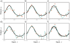
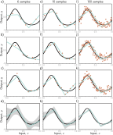
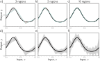
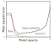

Reducing error
In the previous section, we saw that test error results from three sources: noise, bias, and variance.
The noise component is insurmountable; there is nothing we can do to circumvent this, and it represents a fundamental limit on expected model performance.
However, it is possible to reduce the other two terms.
Reducing bias
The bias term results from the inability of the model to describe the true underlying function. This suggests that we can reduce this error by making the model more flexible.
This is usually done by increasing the model capacity.
For neural networks, this means adding more hidden units and/or hidden layers.
In the simplified model, adding capacity corresponds to adding more hidden units so that the interval [0,1] is divided into more linear regions.
Figures 8.7a–c show that (unsurprisingly) this does indeed reduce the bias; as we increase the number of linear regions to ten, the model becomes flexible enough to fit the true function closely.

Overfitting. a–c) A model with three regions is fit to three different datasets of fifteen points each. The result is similar in all three cases (i.e., the variance is low). d–f) A model with ten regions is fit to the same datasets. The additional flexibility does not necessarily produce better predictions. While these three models each describe the training data better, they are not necessarily closer to the true underlying function (black curve). Instead, they overfit the data and describe the noise, and the variance (difference between fitted curves) is larger.
Reducing variance
Recall that the variance results from limited noisy training data.
Fitting the model to two different training sets results in slightly different parameters.
It follows we can reduce the variance by increasing the quantity of training data.
This averages out the inherent noise and ensures that the input space is well sampled.
Figure 8.6 shows the effect of training with 6, 10, and 100 samples.
For each dataset size, we show the best-fitting model for three training datasets.
With only six samples, the fitted function is quite different each time: the variance is significant.
As we increase the number of samples, the fitted models become very similar, and the variance reduces. In general, adding training data almost always improves test performance.

Reducing variance by increasing training data. a–c) The three-region model fitted to three different randomly sampled datasets of six points. The fitted model is quite different each time. d) We repeat this experiment many times and plot the mean model predictions (cyan line) and the variance of the model predictions (gray area shows two standard deviations). e–h) We do the same experiment, but this time with datasets of size ten. The variance of the predictions is reduced. i–l) We repeat this experiment with datasets of size 100. Now the fitted model is always similar, and the variance is small.
Bias-variance trade-off
However, figures 8.7d–f show an unexpected side-effect of increasing the model capacity. For a fixed-size training dataset, the variance term typically increases as the model capacity increases. Consequently, increasing the model capacity does not necessarily reduce the test error. This is known as the bias-variance trade-off. Figure 8.8 explores this phenomenon. In panels a–c), we fit the simplified three-region model to three different datasets of fifteen points. Although the datasets differ, the final model is much the same; the noise in the dataset roughly averages out in each linear region. In panels d–f), we fit a model with ten regions to the same three datasets. This model has more flexibility, but this is disadvantageous; the model certainly fits the data better, and the training error will be lower, but much of the extra descriptive power is devoted to modeling the noise. This phenomenon is known as overfitting. We’ve seen that as we add capacity to the model, the bias decreases, but the variance increases for a fixed-size training dataset. This suggests that there is an optimal capacity where the bias is not too large and the variance is still relatively small. Figure 8.9 shows how these terms vary numerically for the toy model as we increase the capacity, using the data from figure 8.8. For regression models, the total expected error is the sum of the bias and the variance, and this sum is minimized when the model capacity is four (i.e., with four hidden units and four linear regions in the range of the data).

Bias and variance as a function of model capacity. a–c) As we increase the number of hidden units of the toy model, the number of linear regions increases, and the model becomes able to fit the true function closely; the bias (gray region) decreases. d–f) Unfortunately, increasing the model capacity has the side-effect of increasing the variance term (gray region). This is known as the bias-variance trade-off.

Bias-variance trade-off. The bias and variance terms from equation 8.7 are plotted as a function of the model capacity (number of hidden units / linear regions in range of data) in the simplified model using training data from figure 8.8. As the capacity increases, the bias (solid orange line) decreases, but the variance (solid cyan line) increases. The sum of these two terms (dashed gray line) is minimized when the capacity is four.